Animation techniques
Loops
It is possible to create infinite loops by mixing some Friction features:
1) Create a new scene and set up as desired. It will be a container of just the looped animation.
2) Add the assets and animate them
3) Then switch to the main scene, click on the canvas a select link scene choosing the scene that contains the animation you want to loop.
4) select the linked scene object, open the contextual menu (clicking the secondary mouse button) and turn on Frame remapping. It will activate a new parameter inside the linked scene called “Frame”.
5) Click on the Frame parameter with the secondary button and choose Set Expression.
6) Under Bindings:
frame = $frame
7) Under Calculate
return frame%30
where “30” is just an example as it is the length of the loop, that is, if your loop is within frame number 0 and frame number 30 then set that number in Calculate field.
Reveal (Trim path or sub-path)
It is a technique used to animate the “draw a path”, that is, the stroke reveals or gets drawn. It works with open or closed paths but they must be paths, it doesn’t work with circle or rectangle objects; in that case, please, convert them to paths with Path > Object to path.
Select the path in the Canvas, Properties panel or Timeline hierarchy, click with the secondary button to open the contextual menu and select Path Effects > Sub-Path. Expand it’s parameters and play with them.
A simple reveal stroke animation could be done by animating the max-length parameter from 0 in one frame to 100 in the final frame. The interpolated frames will show the reveal.

Trim path (subpath) offset
Another technique would be to play with the offset parameter as if, for instance, you set min-length to 0and max-length to 10 and animate the offset from 0 to 90 in the last frame, the result will show a short piece of stroke moving along the path from start to end.

Follow path
When animating the movement (transform) of an object, sometimes it is easier to build a path where you want the object to move along.
So, apart from the object it will be needed to draw a vector path where the object will move along. Select the object and add in Transform parameters group enable Transform Effects and choose Add Follow Path Effect. Now, set the path to follow to the name of the created path and animate the parameter complete where 0 is the start of the path and 100 is the end of it. Optionally it is possible to set rotate on so that it automatically rotates following the path direction.

Masking
It’s a very used technique to fade or control the opacity of an object based on another. This way, the masking object can have any shape and even grey scale gradient to have extra control on the masking.

If Friction it works as follows:
- The objects, shapes, etc. to be masked are going to lay at the bottom.
- On top of them all and at the same level, the masking shape. Its color must be pure white.
- Group them all
- Now, important, promote the group into a layer
- Finally, set the blending mode of the masking object to
DstIn(or `DstOut to mask the opposite)
So the hierarchy would have to look like the following:

In the case of masking for an animated SVG, it is possible to use shades of grey in the masking object. White color will be considered opaque, black color will be transparent and shades of grey a transparency ramp.
Blend Effects
Please, don’t confuse them with “Layer blending modes” as the name could be similar but the feature is totally different: Friction includes a smart way of handling layer stacking that simplifies the animation of objects that “change” their layer position with time. It is something that could be done with simpler animation techniques but Blend Effects really simplifies it.

Check the following video for more information: Blend modes (NOTE: it’s an old video so it will refer to Enve 2D animation software instead of Friction which is an evolution of the first one)
Expression based transformations
This technique allow users to create dynamic animations by using code (scripts) to control object properties. Instead of relying on manual keyframes, the user can use expressions to automate behaviors, connect parameters, and add randomness or complexity. There is a whole section about Expressions.

Orbit
With a smart use of Expressions and Custom Properties, it is possible to archive circular movements with just x and y translations. It may be useful in several scenarios.

Check the following video for more information: Orbit and custom properties (NOTE: it’s an old video so it will refer to Enve 2D animation software instead of Friction which is an evolution of the first one)
Parenting
Friction lacks of and advanced rigging system (bones) but there is a Transform Effect called Parent Effect that helps in this regard. Additionally, using Expressions with simple Clamp functions that limit the movements, makes parenting even more capable.

Tracking
There is a Transform Effect called Track Effect that makes an object “look at a target”, that is, if the target object moves along the canvas, the rotation of the object with the Track effect will animate to follow that target.
In some scenarios the target is no a visible object, in those cases it is a good idea to use a Null object, they can be created selecting the Null object tool at the Tools panel.

Text effects
Text can be animated per character, word or line and the effects are endless as it’s possible to combine any Transform parameter and apply path, base path, fill, outline base, outline and/or raster effects.


Check the following video for more information: Text effects (NOTE: it’s an old video so it will refer to Enve 2D animation software instead of Friction which is an evolution of the first one)
Flip book
This feature allows animators to cycle through a sequence of objects, shapes or images within a single object, enabling the creation of frame-by-frame animations. This is particularly useful for animating complex motions or character expressions that require detailed frame transitions.

This feature can only be assigned to a Group or Layer objects while all its children will act as frames. Only one frame will be displayed at a time and an animatable parameter called index will determinate which frame will be displayed.

Check the following video for more information: Flip book (NOTE: it’s an old video so it will refer to Enve 2D animation software instead of Friction which is an evolution of the first one)
Morphing
This technique creates the illusion of one shape turning into a new one but the truth is that it transforms all its nodes into a new and final position but it is performed by just one path.

Every keyframe saves the position of all nodes of a shape. They can be transformed over time, the same that happens with almost any other parameter.
The trick here is the smart way of choosing the initial and final position of the group of nodes (and tangents) that conform the whole shape.
This morphing can be done in two ways:
- start and end keyframes have the same number of nodes: this is the simplest and easiest way to understand the animation as all the nodes just move from the start to an end position creating the morphing illusion.
- start and end keyframes have different number of nodes: in this case, Friction (driven by the animator indeed) decides what nodes are going to be “removed” from start to end as the path can’t really animate this removal. But it will use the
dissolve nodefeature that makes possible todeactivateandactivatean animated node. More on this topic at Dissolve nodes feature.
Whether using one or the other way of morphing, Friction allows to copy path and paste path from one path to another (explained here). It will automatically detect if the pasted one has the same or different number of nodes and it will animate the interpolation accordingly.
By the way, it will probably need some post work on the nodes or a previous work with them as every node has an index and the node animation will be performed matching same start node index with same end node index so it will be crucial to know nodes indexes. Friction lets users check the index assigned to every node by pressing ctrl + shift (or cmd + shift in macOS) in your keyboard as explained here.